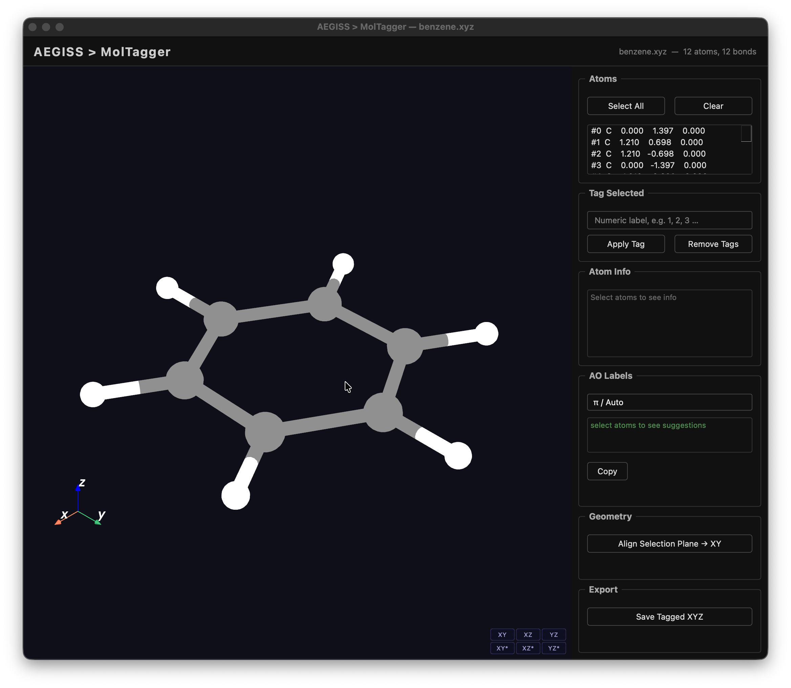
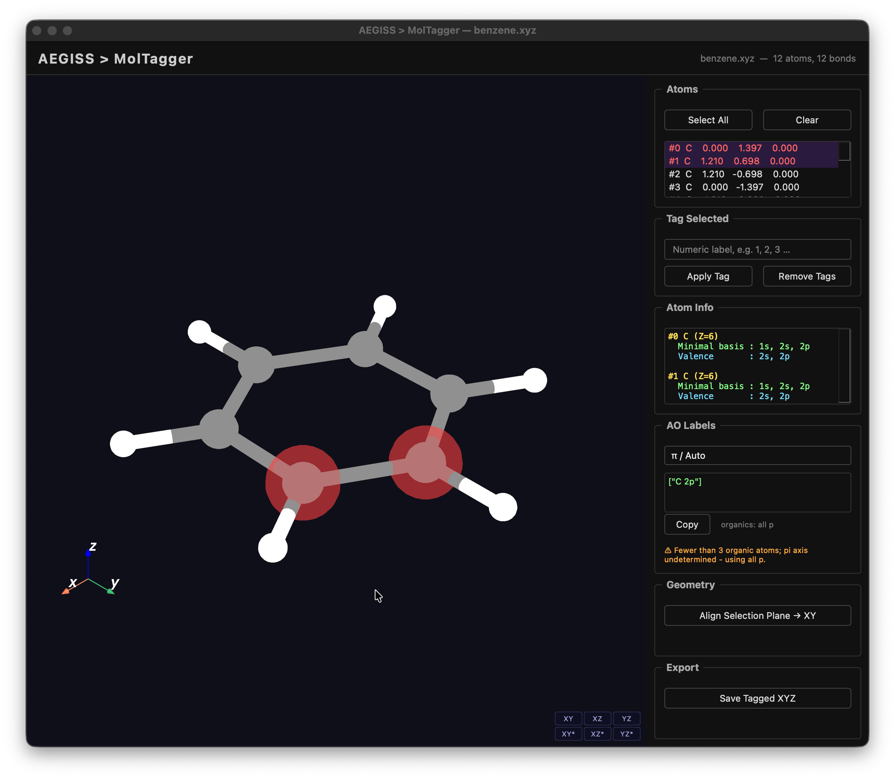
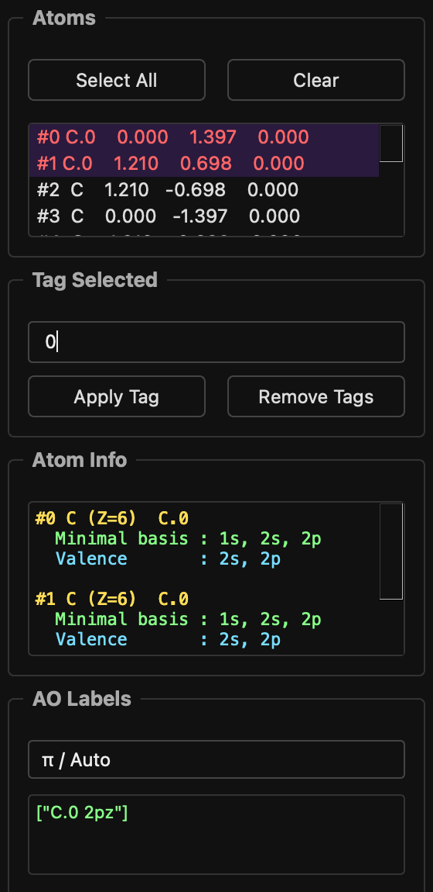
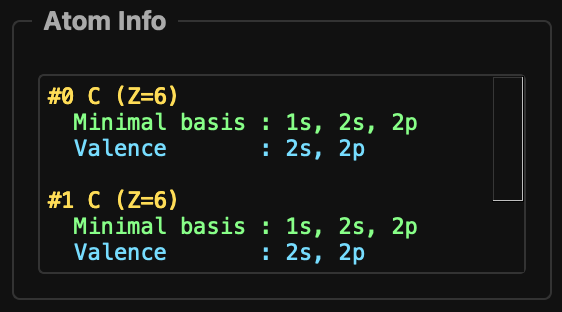
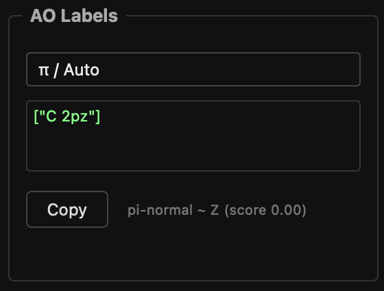
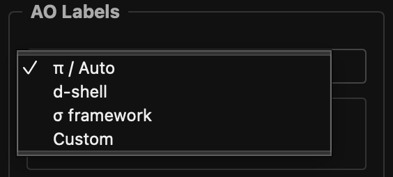
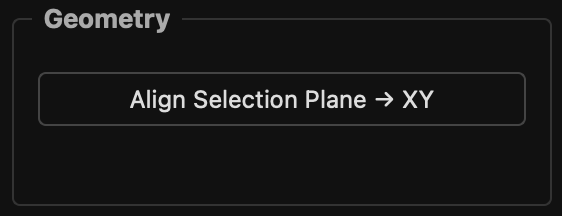
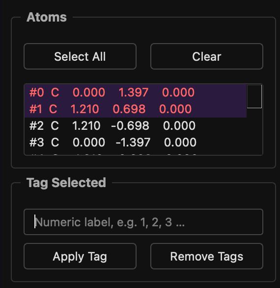
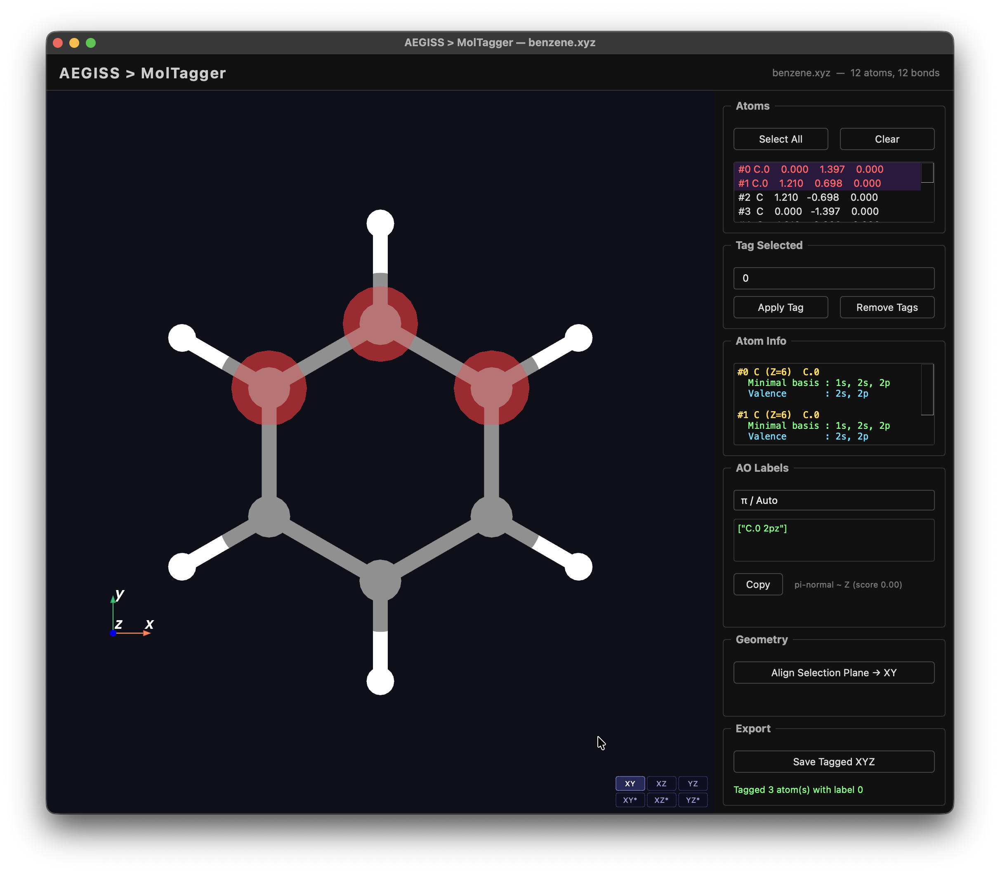

MolTagger
Interactive 3D molecular viewer for selecting atoms and generating PySCF-compatible
ao_labels strings ready to paste into ProjectionConfig.

Requirements
MolTagger requires the viz optional extra:
This pulls in ase, pyvista, pyvistaqt, qtpy, and PySide6.
Quick start
from aegiss.utils.mol_tagger import MolTagger
tagger = MolTagger("my_molecule.xyz")
tagger.show() # opens the viewer; blocks until the window is closed
print(tagger.export_tags()) # {atom_index: "Element.N", ...}
UI overview
┌─────────────────────────────────────────────┬──────────────┐
│ │ Atoms │
│ │ Tag Selected│
│ 3D viewport │ Atom Info │
│ (PyVistaQt / VTK) │ AO Labels │
│ │ Geometry │
│ │ Export │
└─────────────────────────────────────────────┴──────────────┘
The 3D viewport supports standard mouse navigation: rotate (left-drag), zoom (scroll), pan (middle-drag). Fixed camera orientations are described in the Camera / Navigation section, and aligning the molecule to a plane in Align selection plane.
Selecting atoms
| Action | Effect |
|---|---|
| Right-click atom in 3D view | Toggle selection (click, not drag) |
| Click row in Atoms panel | Toggle selection from the list |
| Select All / Clear buttons | Bulk select / deselect |
Selected atoms are highlighted with a translucent red halo in the 3D view and highlighted in the atom list simultaneously. Both views stay in sync.

Tagging atoms
- Select one or more atoms.
- Type a whole-number label in the Tag Selected text box (e.g.
0). - Press Apply Tag or
Return.

Each tagged atom is stored as Element.N (e.g. C.1, Ru.2). Tags appear next to the
atom coordinates in the Atoms list. Remove Tags clears tags from the current selection.
Atom Info panel
Shows the minimal-basis shell structure for each selected atom:

AO Labels panel
Automatically suggests PySCF-compatible ao_labels strings based on the selected atoms
and the chosen character mode. The output is ready to copy directly into
ProjectionConfig. For example:

Press Copy to send the string to the system clipboard.
Character modes

| Mode | Intended use | Logic |
|---|---|---|
| π / Auto | π systems, MLCT/LMCT states | Metals → d/f shell. Organic atoms → np{axis} where {axis} is the plane-normal detected by SVD planarity analysis. Falls back to all np if non-planar. |
| d-shell | Pure metal-centred active spaces | Returns only d/f-shell labels for transition metals. Warns if ligand atoms are also selected. |
| σ framework | Sigma bonding / lone pair character | Organic atoms → ns + the two in-plane np components (complement of the π axis). |
| Custom | Manual entry | Unlocks the text box for free-form input. |
Planarity detection
The normal to the molecular plane is found by SVD of the centred position matrix.
The planarity score is s₂ / s₁ from the singular values.
| Score | Verdict | Labels emitted |
|---|---|---|
| < 0.25 | Planar | C 2pz (or px/py as appropriate) |
| ≥ 0.25 | Non-planar | All C 2p (warning shown in orange) |
Align selection plane
The Geometry panel's Align Selection Plane → XY button rotates the whole molecule
(about its centroid) so that the best-fit plane of the selected atoms becomes the XY plane,
with its normal along Z. It moves the atoms, not the camera, so the 2pz labels then refer
to the out-of-plane direction of the selection. It needs at least three non-collinear selected
atoms; Ctrl+Z undoes the last alignment.


The alignment is most meaningful for planar selections (score < 0.25); for a non-planar selection the fitted plane is a compromise.
Transition metal classification
| Range | Shell |
|---|---|
| Sc–Zn (Z 21–30) | 3d |
| Y–Cd (Z 39–48) | 4d |
| La (Z 57), Hf–Hg (Z 72–80) | 5d |
| Ce–Lu (Z 58–71) | 4f + 5d |
| Ac (Z 89), Rf–Cn (Z 104–112) | 6d |
| Th–Lr (Z 90–103) | 5f + 6d |
Lanthanides and actinides produce two labels because CASSCF active spaces for f-element complexes routinely require both the f and d shells.
Examples
Select Ru only → ["Ru 4d"]
Select Ru + bpy C/N atoms in π / Auto mode:
Select Ce in d-shell mode:
Camera / Navigation
Mouse controls
| Action | Effect |
|---|---|
| Left-click + drag | Rotate |
| Scroll wheel | Zoom in / out |
| Middle-click + drag | Pan |
| Right-click | Select atom (does not move camera) |
Fixed orientations
Six preset buttons snap the camera to a standard plane-aligned view, keeping the current molecule centre:

| Button | Plane shown |
|---|---|
| XY | XY plane (top view) |
| XZ | XZ plane (front view) |
| YZ | YZ plane (side view) |
| XY*, XZ*, YZ* | The same planes, seen from the opposite side |
Tagged XYZ format
Save Tagged XYZ writes a standard XYZ file where tagged atoms use the Element.N
label instead of the bare element symbol:
12
C.1 -1.212345 0.000000 0.000000
C.1 1.212345 0.000000 0.000000
N.2 -2.345678 1.000000 0.000000
Ru.3 0.000000 0.000000 0.000000
H 1.500000 1.000000 0.000000
The file can be reloaded into MolTagger; tags are automatically recovered from the
Element.N labels.